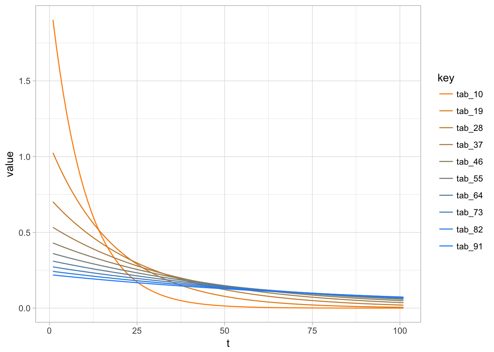

On Aggregation
The Story
Linear reservoirs form the basis building block of most conceptual rainfall-runoff models. They can be combined or extended in a non-linear fashion to account for many complex behaviors. Furthermore, on the grand scale of things they can be seen as approximations to the Saint-Venant equations and are thus even physically justified (somehow, also see: Klemes (1982) and Szilagyi and Szilsi-Nagy (2010)).
For now let us assume that we study a hydrological system that consists of multiple linear reservoirs. The response of each reservoir is defined by a single constant \(tab\) and the overall runoff of the system (which is also the only part that is measurable) is given by the sum of the individual runoffs.
We try to answer the following question by use of simulation:
Is it possible to use arithmetic mean of the reservoir constants to get a lumped reservoir which represents the behvior or response of the individual (“fine scale”) reservoirs
A Little bit of Hydrology
In their search for effective parameters hydrologist usualy revert back to the concept of hydrological response units (HRUs). The idea is to search for regions which are spatially homogenous and lump them together. Afterwards the effective parameters are usually estimated by optimization.
A more modern approach, called multiscale-parameter regionalization (MPR), suggests to first estimate the parameters at the finest possible scale and aggregate the parameters themselves afterwards. To make the fine-scale estimation possible it is assumed that the model parameters can be explicitly defined by a functional relationship with landscape properties.
My PHD is devoted to these functional relationships, but in this document we shall focus on the properties of the aggregation.
The Setup
Let us start with the experimental setup by defining a functional that returns a parameterized linear reservoir as a function of \(tab\). The following figure uses the functional to exemplify how different reservoirs behave with respect to different values of \(tab\) (in relation to a unit input of 20)
spawn_linres <- function(tab) {
q <- 0
linres <- function(qin) {
q_out <- q*exp(-1/tab) + qin*(1-exp(-1/tab))
q <<- q_out
return(q_out)
}
return(linres)
}
#
rain <- c(20,rep(0,100))
make_sim <- function(tab) {
le_model <- spawn_linres(tab)
le_sim = sapply(rain,le_model)
return(le_sim)
}
test_tab <- seq(10.0,99.9, by = 9)
test_q <- sapply(test_tab, make_sim) %>%
tibble::as_tibble(.) %>%
set_colnames(.,"tab" %_% test_tab) %>%
tidyr::gather(.) %>%
mutate(t = rep(1:length(rain),length(test_tab)))
# plot:
le_ramp <- colorRampPalette(c("darkorange","dodgerblue"))
le_colours <- le_ramp(length(test_tab))
ggplot(test_q) +
geom_line(aes(x = t,y=value, color=key)) +
scale_colour_manual(values = le_colours) +
theme_light()
We can see that small values of \(tab\) lead to responsive behavior with fast depletion (orange lines), while large values of \(tab\) lead to a dampened response with long memory (slow depletion, blue lines).
References
Klemes, Vit. 1982. “The Essence of Mathemtical Models of Reservoir Storage.” Canadian Journal of Civil Engineering. doi:10.1139/l82-072.
Szilagyi, Joef, and Andras Szilsi-Nagy. 2010. “Recursive Streamflow Forecasting: A State-Space Approach.”